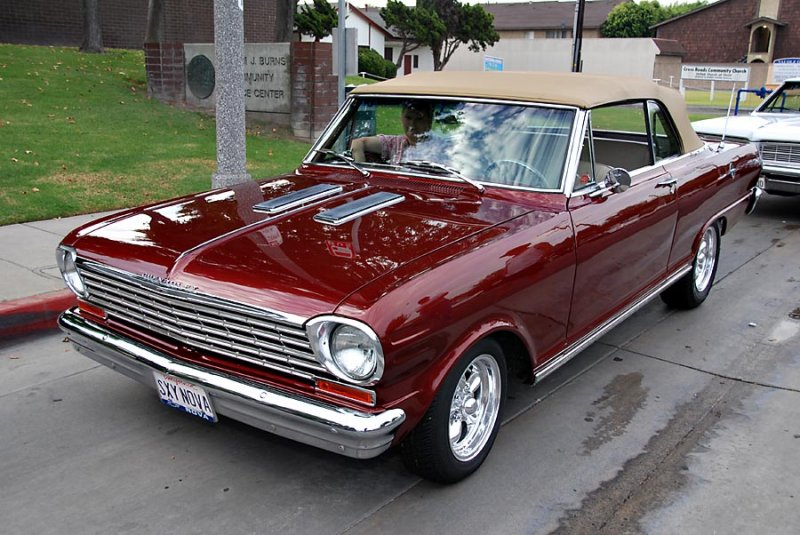

Opala
OPALA CARRO DO FUTURO
O Chevrolet Opala foi um modelo de automóvel fabricado pela General Motors do Brasil. Foi o primeiro automóvel de passeio fabricado pela montadora no país, tendo sido produzido de 1968 a 1992. O Opala foi apresentado ao público brasileiro no Salão do Automóvel de 1968. A carroceria do modelo da General Motors foi inspirada no alemão Opel Rekord, mas com estilo e potência parecidas com a do modelo americano Impala, também fabricado pela marca. O nome Opala veio da junção de opel + impala .Em um curto período de vendas, houve grande aceitação pelo público, tornando-se um modelo consagrado. Fabricado até 1992, o Opala teve diversos usos, estando na garagem da população comum, além de se tornar viatura de polícia eCaravan. Após mais de vinte anos do fim de sua fabricação, o modelo ainda é utilizado como carro diário, também atingindo status de veículo de coleção.